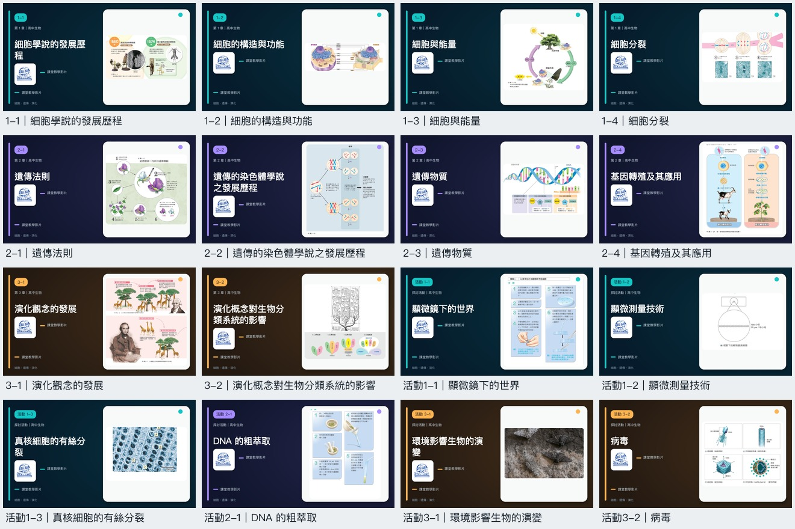

高一奠基 · 全體必修

高一 必修生物（全）
Required Biology · 生命科學的基石
從微觀細胞學說、顯微測量技術到細胞內能量轉換；深入孟德爾遺傳法則與 DNA 雙螺旋密碼；最後拓展至達爾文天擇說與三域系統生命大樹，引領高一學子建立嚴謹完整的生物科學素養。
📖 收錄章節單元：
1 細胞的構造與功能
2 生殖與遺傳
3 演化與多樣性
🔬 探討活動（1-1~1-3、2-1、3-1~3-2）